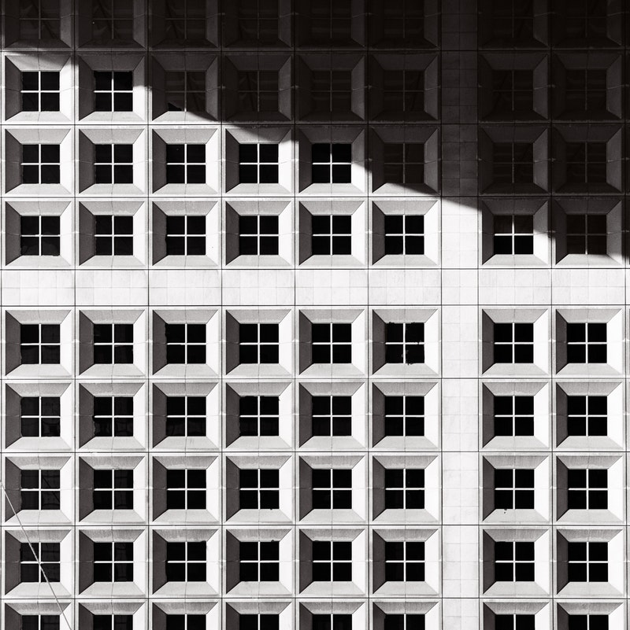

In geometry, a square is a regular quadrilateral, which means that it has four equal sides and four equal angles (90-degree angles, or (100-gradian angles or right angles). It can also be defined as a rectangle in which two adjacent sides have equal length. A square with vertices ABCD would be denoted square ABCD.
In the parlance of jazz, a square was a person who failed to appreciate the medium, or, more broadly, someone who was out of date or out of touch, hence the saying "be there or be square". In the counterculture movements that started in the 1940s and took momentum in the 1960s a "square" referred to someone who clung to repressive, traditional, stereotypical, one-sided, or "in the box" ways of thinking. The term was used by hipsters in the 1940s, beatniks in the 1950s, hippies in the 1960s, yippies in the 1970s, and other individuals who took part in the movements which emerged to contest the more conservative national, political, religious, philosophical, musical, and social trends. It comes from the square representing a four-beat rhythm as shown by a conductor's hands.[1] It was in this context that Sly and the Family Stone's trumpet player Cynthia Robinson yelled out in the hit "Dance to the Music": "All the squares go home!" If the counterculture was a shift from conservatism to liberalism, then square was what liberal people called conservative people and things. While the term waned in popularity during the 1980s, it remained in the public consciousness, particularly of the American baby boom generation, enough that its broad meaning (of a person who respects traditional principles) is exemplified in Huey Lewis's 1986 hit "Hip To Be Square".
Edges
Sides
Angles